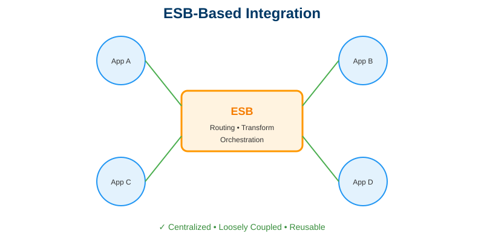
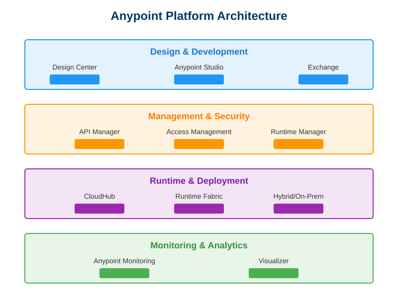

Day 1: Introduction to MuleSoft & Integration
📚 Learning Objectives
- Understand what MuleSoft is and its role in enterprise integration
- Learn the fundamentals of ESB (Enterprise Service Bus)
- Explore the Anypoint Platform ecosystem
- Understand common integration patterns and use cases
- Set up your Anypoint Platform account
Estimated Time: 2 hours
Theory: 60% | Practical: 40%
🏗️ Enterprise Service Bus (ESB)

ESB-Based Integration Architecture
What is an ESB?
An ESB is a software architecture that provides a fundamental framework for connecting different applications and services.
Traditional Integration Challenges:
❌ Point-to-Point Integration Issues:
App A ←→ App B
↕ ↕
App C ←→ App D
Problems:
- Complex web of connections (N² complexity)
- Hard to maintain
- Tight coupling
- No reusability
ESB Solution:
✅ ESB-Based Integration:
App A ↘
App B → ESB → Services & APIs
App C ↗ ↘ Data Sources
App D ↘ External Systems
Benefits:
- Centralized integration
- Loose coupling
- Reusable components
- Easy maintenance
🌐 Anypoint Platform Overview

Anypoint Platform Components
Platform Components:
| Component | Purpose | Use Case |
|---|---|---|
| Design Center | Design APIs and integrations | Create RAML/OAS specs |
| Anypoint Studio | Development IDE | Build Mule applications |
| Anypoint Exchange | Asset repository | Share connectors, templates |
| Runtime Manager | Deploy & manage apps | CloudHub deployments |
| API Manager | Apply policies, analytics | Secure and monitor APIs |
| Monitoring | Visualize app performance | Track metrics, logs |
💼 Real-World Use Cases
Use Case 1: Healthcare Patient Portal
Challenge: Connect patient portal with multiple backend systems (EMR, billing, appointments)
MuleSoft Solution:
Patient Mobile App
↓
API Gateway (MuleSoft)
↓
├─→ EMR System (HL7)
├─→ Billing System (REST)
└─→ Appointment System (SOAP)
Benefits:
- Single API for mobile app
- Legacy system integration
- Security and governance
Use Case 2: Retail Omnichannel
Challenge: Unified inventory across online, mobile, and physical stores
MuleSoft Solution:
- Real-time inventory sync
- Order management across channels
- Customer profile unification
Use Case 3: Banking Account Aggregation
Challenge: Show all customer accounts from different banking systems
MuleSoft Solution:
- Aggregate data from multiple core banking systems
- Transform to common format
- Present unified view to customers
🛠️ Hands-On Activity: Set Up Anypoint Platform Account
Step 1: Create Account
- Go to Anypoint Platform
- Click "Sign up" or "Start free trial"
- Fill in your details:
- Verify your email
- Design Center
- Anypoint Exchange
- Anypoint Studio (download link)
- Your Anypoint Platform URL
- Organization name
- Region selected
- Username
- ✅ Explain what MuleSoft is and why organizations use it
- ✅ Describe the benefits of ESB architecture
- ✅ Identify the main components of Anypoint Platform
- ✅ Understand API-led connectivity approach
- ✅ Have an active Anypoint Platform account
- Ensure you have admin rights on your computer
- Check Java JDK 8 or 11 installation
- Free up 10GB disk space
- Business email (recommended)
- Organization name
- Choose region (US/EU)
Step 2: Explore the Platform
Once logged in, explore these sections:
- Click "Create +" button
- See options: API Specification, Mule Application
- Browse connectors (Salesforce, SAP, etc.)
- Check templates
- Review examples
- Note the latest version
- Check system requirements
Step 3: Document Your Setup
Create a file with:
🎯 Today's Achievements
After completing Day 1, you should be able to:
🔜 Tomorrow's Preview: Day 2
Topic: Anypoint Studio Installation & Setup
We'll install and configure Anypoint Studio, explore the IDE, and prepare your development environment.
Prepare: